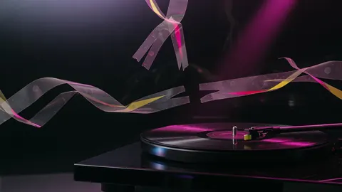
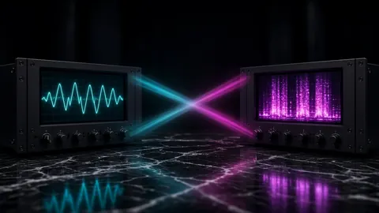
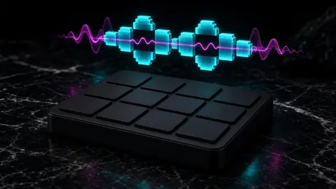
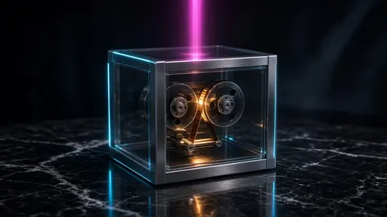
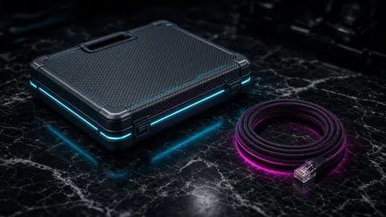
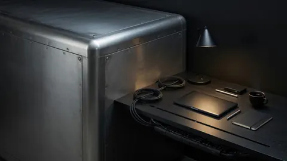
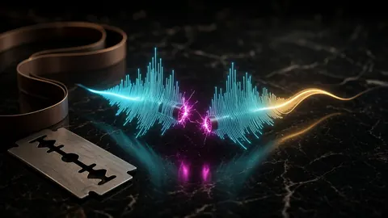

Lacquer · Topic · 9 essays
Stem separation, sampling & privacy
Stems are a diagnostic tool and a sampling source. Both raise the same questions: how clean is the split, and where did the audio go to get split?
Stem separation is a diagnostic tool and, more and more, a sampling source. Both uses raise the same two questions: how clean is the split, and where did the audio have to go to get split? These essays compare Demucs and MDX-Net using the published benchmarks and a runnable listening window, explain why the copy you feed a separator sets the quality ceiling, and give a sampling workflow that chops around bleed instead of through it.
The privacy half is about unreleased music: the four terms-of-service clauses to read before uploading to a cloud splitter, what browser-local and offline processing actually protect (and the metadata that leaks anyway), and when local tools beat an upload queue. The thread through all of it: use stems to hear the problem, fix the mix itself, and keep unreleased files on your own machine when you can.

Stems · 21 August 2026 · 7 minStems diagnose mixes — they do not replace them
Stem separation isolates parts so you can hear collisions. It does not invent a better arrangement. Use stems to diagnose, then fix the mix.

Stems · 8 October 2026 · 11 minDemucs vs MDX-Net: what each separator gets wrong, and why
Demucs vs MDX-Net from the published benchmarks and a runnable window test: who wins drums and bass, who wins vocals, and how to hear it.
- Stems · 8 October 2026 · 11 min
Splitting stems from YouTube audio you own starts with the cleanest copy
Want stems from a song you uploaded to YouTube? The copy you feed the separator sets the ceiling. Find the first-generation file, then split locally.

Sampling · 8 October 2026 · 11 minSampling from separated stems: chop around the bleed, not through it
A producer’s workflow for sampling from AI-separated stems: audit the bleed, restore the attack, null-test, match key, clear what you don’t own.

Local-first · 8 October 2026 · 10 minBefore a cloud stem splitter gets your unreleased song, read four clauses
Uploading an unreleased track to a cloud stem splitter is a rights decision. Four terms clauses to read, and how to prove a split stays local.

Privacy · 8 October 2026 · 10 minKeeping an unreleased master on your own machine, honestly
What browser-local and offline audio processing protect for unreleased music, what they don't, the metadata that leaks anyway, and privacy claims to defend.
- Practice · 20 August 2026 · 7 min
Should you upload an unreleased master to the cloud?
Upload an unreleased master only if you accept a vendor holding the file. Loudness, true peak, and clip checks can stay fully local with CoProducer.

Local-first · 21 August 2026 · 7 minHow to check LUFS without uploading your song
You don’t need to upload a track to measure LUFS or true peak. A free meter plugin or one FFmpeg command does it in seconds, and your unreleased song stays put.

Editing · 21 October 2026 · 7 minClicks at your edit points come from cutting mid-wave. Fade every cut
Why audio edits click and pop: a cut or splice that lands mid-waveform makes an instant jump. A 5 ms fade or crossfade removes it. Includes a click-finder script.
More topics: Loudness & LUFS True peak, limiting & delivery Low end, 808s & mix dynamics 432 Hz, pitch & tempo All essays